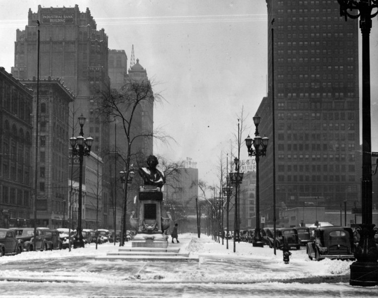

A high rise notable for its terra cotta facade and elaborate cornice, the Empire once stood two parcels north of the Julian C. Madison Building, at Clifford. It was designed by John Scott and built in 1908.
One reason that Rubello selects 1420 Washington for the site of Color Cubes is because he believes that the Empire Building will help protect his mural from the elements over time. It does so until the late 1990s, when it is razed for a parking lot.
In the photo above, the Empire Building (second from left) can be seen in relation to 1420 Washington (fourth from left, with the Robinson Furniture Company sign partially visible). The low-rise building between them is lost to fire in 1961 -- making the creation of Color Cubes, twelve years later, possible.2